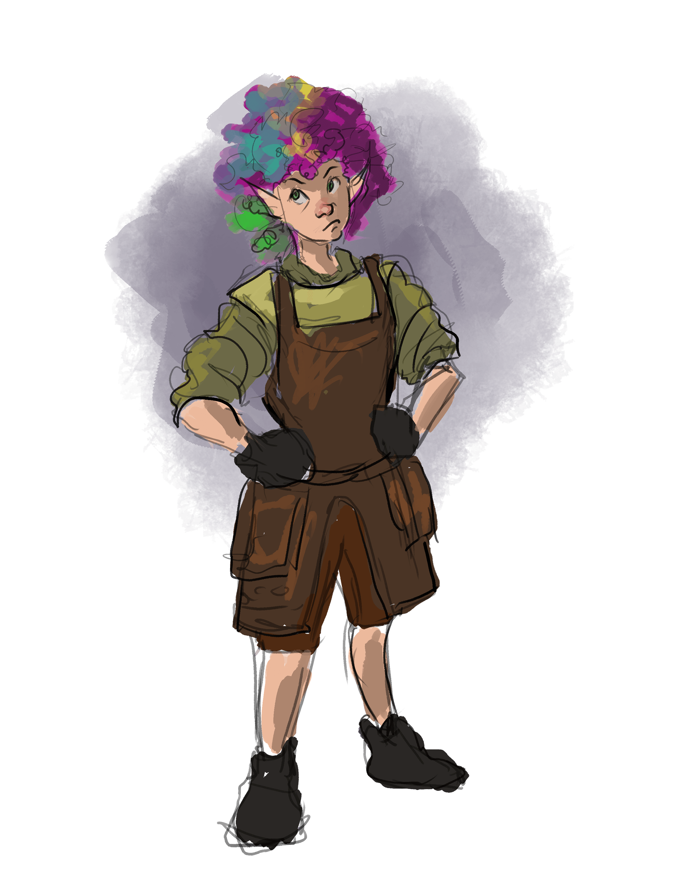

Rainbow
middle age mountain gnome
chaotic neutral
Level 0 civilian
Pronouns:
they/them
Occupations:
Smith, proprietor of the town forge
Armor Class
10
Hit Points
8 (TODO Hitdice)
Speed
25.
STR
16 ()
DEX
11
CON
15
INT
10
WIS
9
CHA
7
Saving Throws
TODO Saving Throws
Skills
Proficiencies
TODO
Damage Immunities
TODO Damage Immunities
Condition Immunities
TODO Condition Immunities
Senses
TODO Senses
Languages
Human gnome ,
Adjectives
Explosive ,
Special Abilities
Special Equipment
- Many exotic woods; doesn't know that their forge is actually the Sampo
- built by Ilmarinen the Everlasting Craftsman.
Combat Tactics
Rainbow tries to avoid or escape combat as much as possible, aware of her lack of training.
Actions
Club/Cudgel
Factions
